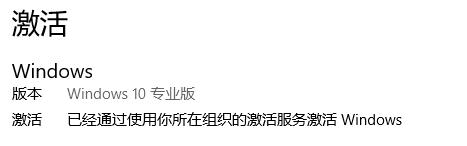
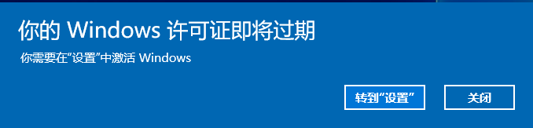
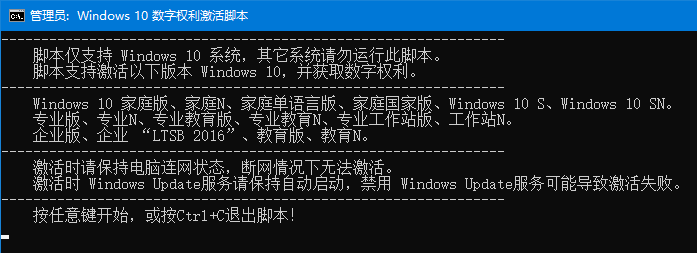
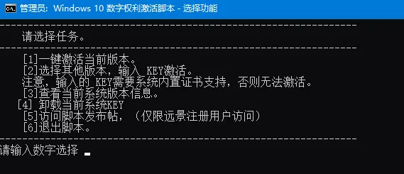
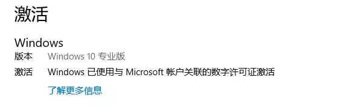
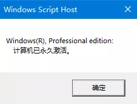

Window 10 数字权利获取工具
一月 02, 2021
还在害怕激活工具篡改主页携带病毒？还在为Win10专业版无法永久激活而苦恼？

KMS激活会显示组织的激活服务，只能激活180天，快要到期时你会看到这个。

但是有了国外科技论坛大神发布名为HWIDGEN激活工具，妈妈再也不用担心我Win10不能永久激活啦。
步骤
1.首先准备一台未激活的装有任何版本Win10系统的计算机。
2.下载由远景论坛网友黯然 KING编写的简化脚本包：下载地址
3.完整解压压缩包后右键点击Activation.CMD文件并选择使用管理员身份运行，然后会提示工具支持的版本。
注意：确保电脑联网，并且Windows Update服务已开启。


接下来有几个选项默认情况下我们直接填写数字1来激活本机系统，输入后脚本自动工作联网获取数字权利。

- 4.查看结果：在设置里显示Windows已使用数字许可证激活，若登录了Microsoft账户还会与账号关联。

“win+R”运行：slmgr.vbs -xpr 命令可以看到“计算机已永久激活”的对话框。

原理介绍
数字权利即与已系统绑定的激活许可证。默认情况下当Windows 10被激活后会自动生成与硬件ID对应的许可证，该许可证会存储到微软的服务器上。当系统重新安装时自动将硬件ID提交给微软检索对应的许可证，若许可证符合则系统自动激活无需用户操作。
(本文转载自微信公众号Smart，点击此处查看原文)
查看评论